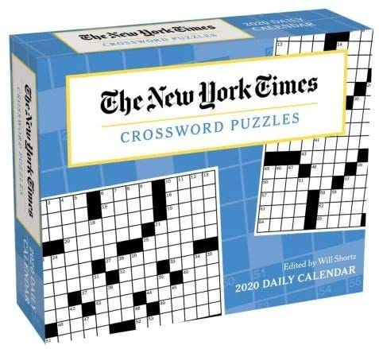
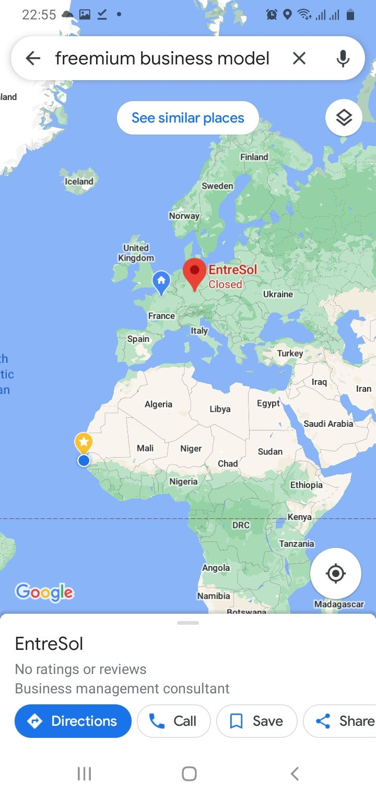
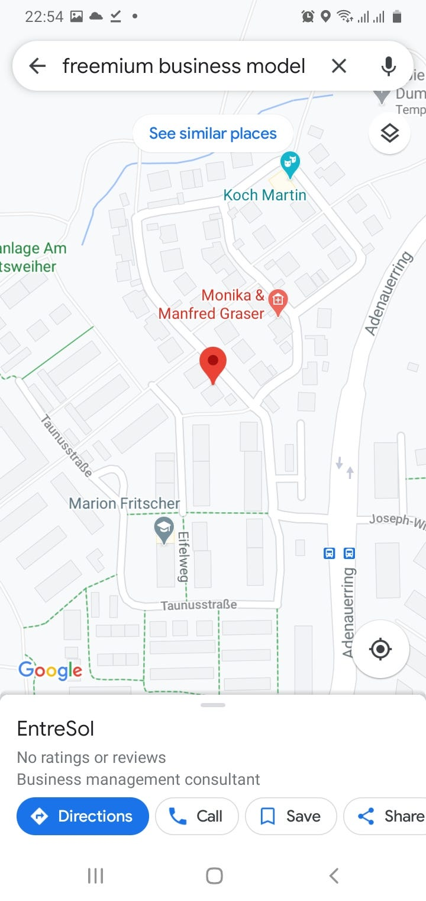
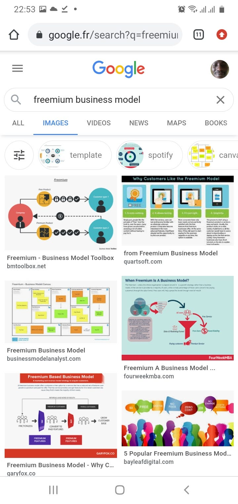
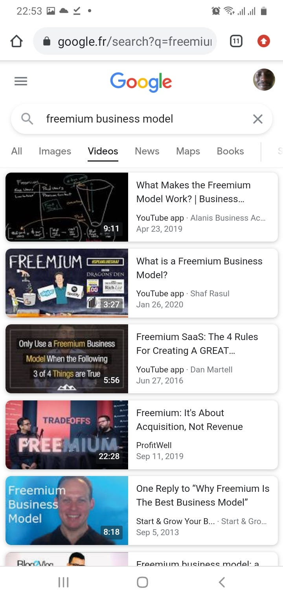
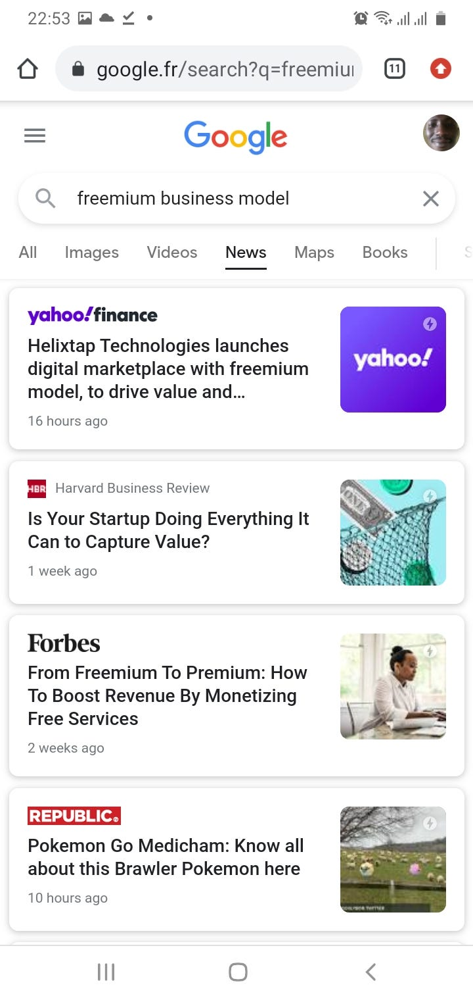
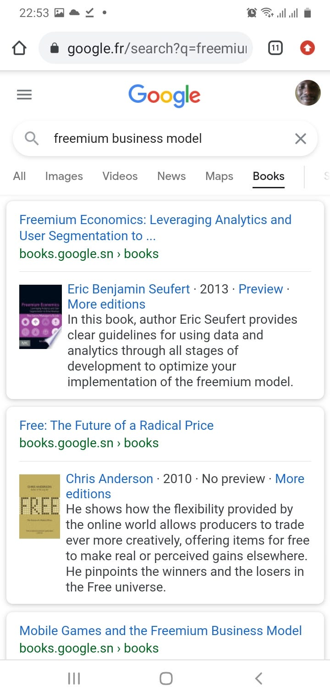

Feb 9, 2021
The star articles wholefree business model

Because this title is right there as premium paid content you could write a better piece if this title and publish it for free online. The fact that this article is stared in this publishing platform is a signal that people are willing to read it. Don’t forget that publishing platform articles drive searches on search engines like google and bing. Where are you about this algorithm that highlight the correlation between the article and search trends. This smartphone jut suggested me tree when I was trying to write trends. Of course how to deal with trees and graphs data structures is worth learning for making this algorithm efficient.
This spot in this map can make someone more likely to click if the spot highlight a place that matters for her or him. Here is Nuremberg. What about Gutenberg.





